Ch12에서 완성한 65MHz 파이프라인 프로세서는 매 클록마다 명령어를 가져옵니다.
그러나 실제 DRAM(Dynamic Random Access Memory)은 100~300사이클의 지연을 가집니다.
이 챕터에서는 이 간극을 메우는 캐시(Cache) 메모리의 원리를 이해하고,
직접 매핑(Direct-Mapped) L1 명령어 캐시를 SystemVerilog로 설계하여
파이프라인 프로세서에 통합합니다.
13.1 메모리 계층 구조 — 왜 캐시가 필요한가
Ch12에서 여러분은 버블정렬 프로그램을 65MHz 파이프라인 프로세서 위에서 성공적으로 실행했습니다.
포워딩, 스톨, 분기 플러시까지 완벽히 구현된 프로세서입니다.
이제 한 가지 불편한 진실을 마주할 시간입니다.
여러분의 프로세서가 매번 LW 명령어를 실행할 때마다 실제 DRAM에 접근해야 한다면 어떤 일이 벌어질까요?
현대 DRAM의 접근 시간은 약 100~300사이클입니다. 65MHz에서 1사이클은 약 15ns이므로,
DRAM 한 번 접근에 1,500~4,500ns, 즉 최대 4.5μs를 기다려야 합니다.
LW 명령어 비율이 20%인 일반적인 프로그램에서 실효 CPI를 계산해 봅시다.
DRAM 직접 접근 시 실효 CPI 계산
CPIbase = 1.2 (Ch12 파이프라인)
CPIstall = LW 비율 × DRAM 지연 = 0.20 × 200사이클 = 40사이클 CPI실효 = 1.2 + 40 = 41.2
→ 파이프라인 최적화(스톨 0.2사이클 절감)는 DRAM 지연(40사이클 낭비) 앞에서 무의미!
이 숫자가 여러분에게 충격으로 다가오길 바랍니다. 이 경이감이 바로 캐시를 배우는 동기입니다.
CPU와 DRAM 사이의 속도 격차를 메모리 장벽(Memory Wall)이라고 부릅니다.
1980년대부터 CPU 속도는 매년 60% 향상되었지만, DRAM 속도는 매년 7%밖에 향상되지 않았습니다.
이 격차를 메우기 위해 고안된 것이 바로 캐시(Cache) 메모리입니다.
메모리 계층 구조 (Memory Hierarchy)
현대 컴퓨터 시스템은 속도와 용량이 서로 다른 메모리를 계층적으로 배치하여 이 문제를 해결합니다.
이를 메모리 계층 구조(Memory Hierarchy)라고 합니다.
빠르고 비싼 메모리는 작게, 느리고 저렴한 메모리는 크게 구성하여
자주 쓰는 데이터는 빠른 곳에, 나머지는 느린 곳에 저장합니다.
그림 13.1: 메모리 계층 구조 — 위로 갈수록 빠르고 비싸며 작다. 아래로 갈수록 느리고 저렴하며 크다.
각 계층의 특성은 다음과 같습니다.
레지스터 파일(32 × 32비트)은 1사이클 이내에 접근 가능하지만 32개뿐입니다.
L1 캐시는 수십 KB 크기로 약 4사이클이 걸립니다.
L2 캐시는 수백 KB~수 MB로 약 10사이클,
DRAM(주 메모리)은 수 GB이지만 100~300사이클이 소요됩니다.
SSD/HDD는 수 TB에 달하지만 수만~수백만 사이클이 필요합니다.
AMAT — 평균 메모리 접근 시간 (Average Memory Access Time)
캐시의 성능은 AMAT(Average Memory Access Time, 평균 메모리 접근 시간)로 정량화합니다.
AMAT = 히트 시간 + 미스율 × 미스 페널티
예를 들어, L1 캐시 히트 시간이 1사이클, 미스율이 5%, DRAM 미스 페널티가 100사이클이라면:
AMAT = 1 + 0.05 × 100 = 6사이클입니다.
캐시 없이 DRAM에 직접 접근하면 AMAT = 100사이클이므로, 약 17배의 성능 향상입니다.
지역성 원리 (Locality Principle)
캐시가 작아도 효과적인 이유는 프로그램에 지역성 원리(Principle of Locality)가 존재하기 때문입니다.
지역성이 없다면 캐시는 아무런 의미가 없습니다.
지역성에는 두 가지 형태가 있습니다.
시간적 지역성(Temporal Locality)이란, 최근에 접근한 메모리 위치에 가까운 미래에 다시 접근할 가능성이 높다는 성질입니다.
Ch12 버블정렬의 루프 카운터 변수 j를 생각해봅시다.
이 변수는 루프가 실행되는 동안 수십 번 읽히고 씌어집니다.
같은 주소에 반복 접근하므로, 첫 번째 MISS 이후에는 캐시에서 계속 HIT됩니다.
공간적 지역성(Spatial Locality)이란, 접근한 메모리 위치 근처의 주소들도 곧 접근할 가능성이 높다는 성질입니다.
버블정렬에서 arr[j]와 arr[j+1]을 비교할 때,
두 원소는 4바이트 간격으로 인접해 있습니다.
하나에 접근하면 나머지도 곧 접근하게 됩니다.
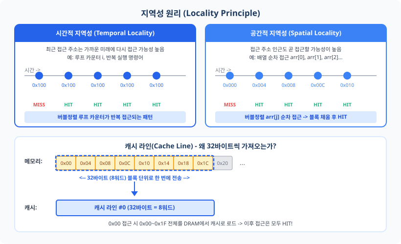
그림 13.2: 지역성 원리 — 시간적 지역성(같은 주소 반복)과 공간적 지역성(인접 주소 순차). 캐시 라인 단위 전송이 공간적 지역성을 활용한다.
공간적 지역성을 최대한 활용하기 위해, 캐시는 메모리에서 데이터를 1바이트씩이 아닌
캐시 라인(Cache Line) 혹은 블록(Block) 단위로 가져옵니다.
이 챕터에서는 32바이트(8워드)를 한 블록으로 사용합니다.
0x0000_0000에 접근하면 0x0000_0000~0x0000_001F 전체(32바이트)를 DRAM에서 캐시로 로드합니다.
이후 0x0000_0004, 0x0000_0008 등에 접근할 때는 모두 캐시 HIT입니다.
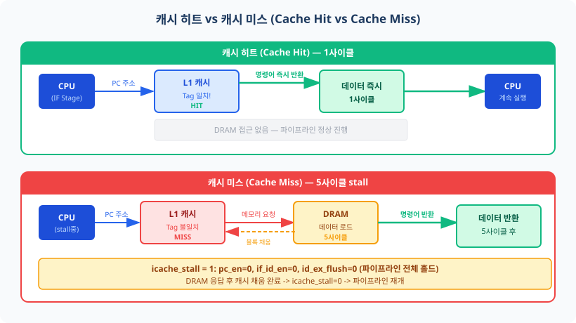
그림 13.3: 캐시 히트(1사이클)와 캐시 미스(5사이클 stall) 처리 경로. 미스 시 파이프라인은 홀드(icache_stall=1)된다.
13.2 직접 매핑 캐시 구조 — Tag, Index, Offset
이제 캐시를 실제로 설계합니다.
"캐시에 데이터를 저장한다"는 것은 구체적으로 어떤 의미일까요?
32비트 주소로 접근 가능한 4GB 메모리를 128개 슬롯에 매핑해야 합니다.
어떤 주소가 어느 슬롯에 들어가야 할지 결정하는 방식이 바로 캐시의 매핑 정책입니다.
직접 매핑 (Direct-Mapped Caching)
가장 단순한 매핑 방식은 직접 매핑(Direct-Mapped)입니다.
각 메모리 주소가 캐시의 정확히 하나의 슬롯에만 저장될 수 있습니다.
비유 — 128칸짜리 물품 보관함(라커룸):
기차역 물품 보관함을 상상해봅시다. 128개의 칸이 있고, 번호가 0번부터 127번까지 붙어 있습니다.
당신의 가방(메모리 블록)은 항상 정해진 칸에만 보관됩니다.
칸 번호는 여행 티켓 번호의 끝자리로 결정됩니다(= Index).
같은 칸 번호를 가진 두 사람이 동시에 보관하려 하면 한 명이 기다려야 합니다(= 충돌 미스).
라커를 열었을 때 내 짐인지 확인하려면 이름표(= Tag)를 봅니다.
주소 분해: Tag / Index / Offset
32비트 주소를 세 부분으로 분리합니다. 결정 순서가 중요합니다.
1단계: Offset(오프셋) 결정 — "블록 내 어느 바이트?"
블록 크기가 32바이트이므로, 32바이트 내 위치를 가리키려면 log₂(32) = 5비트가 필요합니다.
주소의 최하위 5비트 [4:0]이 Offset입니다.
그 중 [4:2]의 3비트는 워드(4바이트) 단위 선택에 사용합니다.
2단계: Index(인덱스) 결정 — "몇 번 칸에 저장?"
128개 슬롯 중 하나를 선택하려면 log₂(128) = 7비트가 필요합니다.
주소의 [11:5] 7비트가 Index입니다.
3단계: Tag(태그) 결정 — "원본 블록 확인"
나머지 상위 비트 [31:12], 즉 20비트가 Tag입니다.
같은 Index를 가진 수많은 블록 중 어느 블록이 이 슬롯에 있는지 식별합니다.
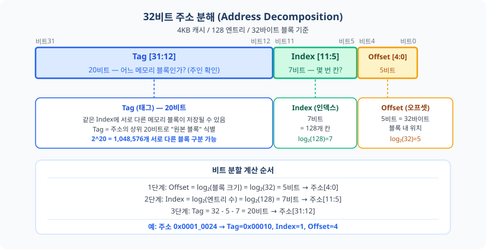
그림 13.4: 32비트 주소 분해 — Tag[31:12](20비트, 파란색), Index[11:5](7비트, 초록색), Offset[4:0](5비트, 주황색).
비유 — 아파트 주소 체계:
"서울시 강남구 테헤란로 OO동 X호 Y층 Z호실"에서
Tag = 도시+구+로 (어느 아파트 단지인가),
Index = 동 번호 (어느 동인가),
Offset = 호실 내 방 번호 (동 내에서 어느 방인가)에 해당합니다.
같은 동 번호(Index)를 가진 다른 아파트 단지(Tag)가 존재할 수 있습니다.
Valid 비트의 필요성
캐시는 처음 전원이 켜졌을 때 아무런 데이터도 없습니다.
이 상태에서 Tag 배열의 초기값은 0입니다.
만약 Valid 비트가 없다면, Tag=0인 슬롯에 주소 0x0000_0000의 데이터가 마치 저장된 것처럼 잘못 판정될 수 있습니다.
캐시 구조 다이어그램
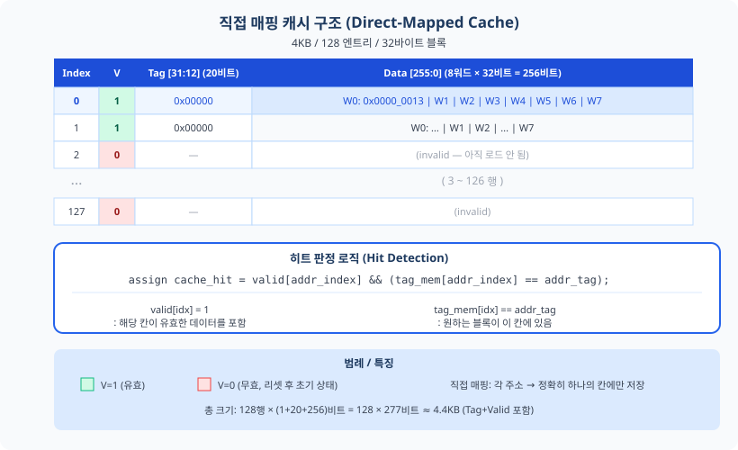
그림 13.5: 직접 매핑 캐시 구조 — 128행 × (Valid 1비트 + Tag 20비트 + Data 8워드×32비트). 히트 판정은 valid[idx] && (tag_mem[idx] == addr_tag)로 구현된다.
Tag 배열과 Data 배열은 서로 다른 FPGA 자원에 매핑합니다.
이 설계 결정이 처음에는 복잡하게 느껴질 수 있지만, 이유는 명확합니다.
이 결정을 이해하려면 FPGA의 두 가지 RAM 종류를 먼저 구분해야 합니다.
LUTRAM(분산 RAM)은 비동기(Asynchronous) 읽기를 지원합니다.
클록 엣지와 무관하게 입력 주소가 바뀌는 즉시 출력이 갱신됩니다.
BRAM(블록 RAM)은 동기(Synchronous) 읽기를 합니다.
클록 rising edge에서만 출력이 갱신되므로 요청한 다음 사이클에 데이터가 나옵니다.
히트 판정(Tag 비교)은 같은 사이클에 결과가 필요하므로 LUTRAM을 사용하고,
명령어 데이터(Data)는 BRAM의 1사이클 지연이 파이프라인 IF 스테이지 내에서 자연스럽게 흡수됩니다.
Tag 배열 → LUTRAM(분산 RAM, Distributed RAM):
히트 판정은 조합 논리로 수행해야 합니다. 즉, 같은 사이클에서 주소를 받아 즉시 HIT/MISS를 알려야 합니다.
이를 위해 비동기 읽기가 가능한 LUTRAM을 사용합니다.
Tag 배열 크기는 128 × 20비트 = 2,560비트로 작아서 LUTRAM으로 충분합니다.
Data 배열 → BRAM(블록 RAM, Block RAM):
명령어 데이터는 큰 용량이 필요합니다. 128 × 8워드 × 32비트 = 32,768비트입니다.
Basys 3의 BRAM36은 36Kbit를 저장하므로 BRAM 1개면 충분합니다.
BRAM은 동기 읽기(1사이클 지연)를 합니다.
이 1사이클 지연은 파이프라인 IF 스테이지에서 자연스럽게 흡수됩니다.
Tag는 LUTRAM으로 즉시(0사이클) 비교하고, Data는 BRAM에서 동시에 읽기 시작하여 IF 스테이지 내 1사이클 안에 도착합니다.
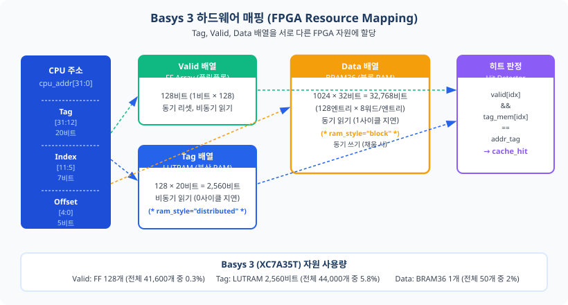
그림 13.6: Basys 3 FPGA 자원 매핑 — Valid(FF 128개), Tag(LUTRAM 2,560비트), Data(BRAM36 1개).
13.3 주소 분해 연습 — 손으로 계산하면 몸에 익는다
캐시 설계에서 가장 중요한 스킬 중 하나는 임의의 32비트 주소가 캐시의 어느 슬롯에 매핑되는지
즉시 계산할 수 있는 능력입니다. 이 절에서는 5개 예제를 단계별로 분해하고,
마지막에 연습문제로 스스로 확인합니다.
처음에는 천천히, 나중에는 거의 암산으로 할 수 있을 것입니다.
캐시 파라미터 정리
파라미터
값
비트 필드
계산 근거
캐시 크기
4KB = 4,096바이트
—
—
블록 크기
32바이트 = 8워드
Offset [4:0]
log₂(32) = 5비트
엔트리 수
128개
Index [11:5]
log₂(128) = 7비트
Tag 폭
20비트
Tag [31:12]
32 - 5 - 7 = 20비트
예제 1: 0x0000_0000 — Cold Miss
주소 0x0000_0000을 이진수로 쓰면: 0000_0000_0000_0000_0000 | 000_0000 | 0_0000
Tag = 0x00000 (20비트 모두 0), Index = 0, Offset = 0 (바이트 0번째 = 블록 기저)
캐시 슬롯 #0에 저장. 처음 접근이므로 valid[0]=0 → Cold Miss.
DRAM에서 0x0000_0000~0x0000_001F (32바이트) 전체를 슬롯 #0에 채웁니다.
예제 2: 0x0000_0004 — 공간적 지역성 HIT!
주소 0x0000_0004의 Offset = 4 (0b00100), Index = 0, Tag = 0x00000.
예제 1에서 슬롯 #0에 0x0000_0000~0x0000_001F가 이미 채워졌으므로,
valid[0]=1이고 tag_mem[0]=0x00000 → Tag 일치 → HIT!
이것이 공간적 지역성의 효과입니다. DRAM 접근 없이 1사이클에 완료됩니다.
예제 3: 0x0000_0020 — 다른 슬롯, Cold Miss
주소 0x0000_0020 = 0b0000...0000 | 000_0001 | 0_0000.
Index = 1 (0x0000_0020 >> 5 = 1), Offset = 0, Tag = 0x00000.
슬롯 #1은 아직 비어있음(valid[1]=0) → Cold Miss. 슬롯 #1에 블록 채움.
예제 4: 0x0001_0000 — 충돌 미스! (Conflict Miss)
주소 0x0001_0000 = 0b0000_0000_0001 | 000_0000 | 0_0000.
Index = 0 (슬롯 #0), Tag = 0x00010 (=16).
슬롯 #0에는 이미 Tag=0x00000 (예제 1의 데이터)가 있습니다.
valid[0]=1이지만 tag_mem[0](=0x00000) ≠ addr_tag(=0x00010) → Conflict Miss!
기존 데이터(0x0000_0000 블록)는 슬롯 #0에서 축출(Eviction, Evict)되고, 0x0001_0000 블록이 채워집니다.
예제 5: 블록 내 연속 접근 (공간적 지역성 완전 활용)
0x0000_0000 접근 후 0x0000_0004, 0x0000_0008, ..., 0x0000_001C를 순서대로 접근.
모두 Index=0, Tag=0x00000이고 Offset만 다릅니다 (4, 8, 12, 16, 20, 24, 28).
첫 번째 접근(0x0000_0000)만 Miss이고, 이후 7번은 모두 HIT. 히트율 = 7/8 = 87.5%
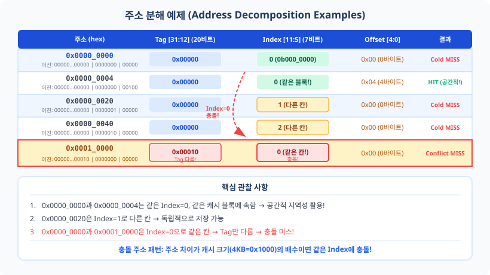
그림 13.7: 주소 분해 예제 — 0x0000_0000과 0x0001_0000이 같은 Index=0에 충돌하는 패턴에 주목한다.
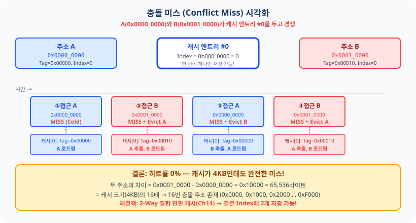
그림 13.8: Conflict Miss 시각화 — A와 B가 슬롯 #0을 번갈아 점유하면 모든 접근이 MISS된다.
연습 문제
Q1: 주소 0x0000_0060의 Tag, Index, Offset을 각각 구하시오. 정답 보기
0x0000_0060 = 0b0000...0000 | 000_0011 | 0_0000
Tag = 0x00000, Index = 3, Offset = 0
→ 슬롯 #3에 저장됩니다.
Q2: 0x0000_0000과 직접 충돌하는 주소를 하나 더 구하시오. 정답 보기
충돌 조건: Index = 0 (주소[11:5] = 0)이고 Tag ≠ 0이어야 함.
예: 0x0001_0000 (Tag=0x00010), 0x0002_0000 (Tag=0x00020), 0xFFF0_0000 (Tag=0xFFF00) 등
패턴: 0x0000_0000 + N × 0x1000 (N=1, 2, 3, ...): 4KB 간격으로 무한히 존재!
Q3: 블록 크기가 64바이트(16워드)로 늘어난다면 Offset 비트 폭은? 정답 보기
log₂(64) = 6비트 → Offset [5:0]
캐시 크기 4KB 유지 시 엔트리 수 = 4096 / 64 = 64개 → Index = log₂(64) = 6비트
Tag = 32 - 6 - 6 = 20비트 (동일!)
→ 블록이 커지면 공간적 지역성 활용은 늘지만, 채움 시간(Fill Time)도 길어집니다.
13.4 캐시 미스 처리 FSM과 파이프라인 통합
캐시 미스가 발생하면 파이프라인은 무엇을 해야 할까요?
Ch10에서 Load-Use 해저드 시 1사이클 스톨을 했던 것을 기억하십시오.
캐시 미스도 스톨의 한 형태이지만, 지속 시간(5사이클)과 제어 방식이 다릅니다.
"이미 아는 것의 확장"으로 이해하면 쉽습니다.
스톨 종류 비교
스톨 원인
pc_en
if_id_en
id_ex_flush
지속 기간
효과
Load-Use (Ch10)
0
0
1 (NOP 삽입)
1사이클
ID/EX에 버블 삽입
분기 flush (Ch11)
1
flush
flush
1~2사이클
wrong-path 명령어 제거
I-Cache 미스 (Ch13)
0
0
0 (홀드!)
미스 페널티 (5사이클)
파이프라인 전체 동결
핵심 차이는 id_ex_flush = 0입니다.
Load-Use 스톨에서는 ID/EX에 버블(NOP)을 삽입하여 잘못된 명령어 실행을 방지합니다.
캐시 미스 스톨은 파이프라인 전체를 그대로 동결(Freeze)합니다.
아무 명령어도 새로 진행되지 않으며, 기존에 진행 중이던 명령어들도 그 자리에서 멈춥니다.
따라서 id_ex_flush가 불필요합니다.
비유 — 식당 주방:
파이프라인을 식당 주방 조리 과정으로 생각해봅시다.
재료(명령어)가 떨어졌습니다. 주문서(PC)를 창고(DRAM)에 보내 재료를 요청합니다.
재료가 올 때까지(5사이클) 냄비에 있는 음식들은 그 자리에 그대로 있습니다(전체 홀드).
재료가 도착하면 냉장고(캐시)에 넣고, 이후에는 냉장고에서 바로 꺼냅니다.
Load-Use 스톨은 "소금을 잘못 넣으려는 순간 멈추는 것"과 달리,
캐시 미스는 "재료 자체가 없어서 전부 기다리는 것"입니다.
캐시 미스 FSM 설계
캐시 미스 처리를 위한 FSM(Finite State Machine)은 4개 상태로 구성됩니다.
FILL 상태에서는 내부 카운터(fill_cnt)가 0에서 3까지 증가하며 총 4사이클을 대기합니다.
이 기간 동안 DRAM이 32바이트 블록(8워드)을 전송합니다.
카운터가 최댓값(3)에 도달하면 블록 채움이 완료된 것으로 보고 DONE 상태로 전환됩니다.
MISS(1사이클) + FILL(4사이클) = 5사이클이 미스 페널티가 됩니다.
DONE 상태는 1사이클 동안 유지되며, 캐시가 데이터를 출력할 준비가 되었음을 파이프라인에 알립니다.
typedef enum logic [1:0] {
IDLE = 2'b00, // 대기: 히트 or 요청 없음
MISS = 2'b01, // 미스: 메모리 요청 전송 (1사이클)
FILL = 2'b10, // 채움: 고정 4사이클 대기 (fill_cnt 0→3)
DONE = 2'b11 // 완료: 데이터 준비됨 (1사이클 후 IDLE 복귀)
} cache_state_t;
// icache_stall: MISS 또는 FILL 상태에서 파이프라인 홀드
assign icache_stall = (state == MISS) || (state == FILL);
// mem_req: MISS 상태에서만 메모리 요청
assign mem_req = (state == MISS);
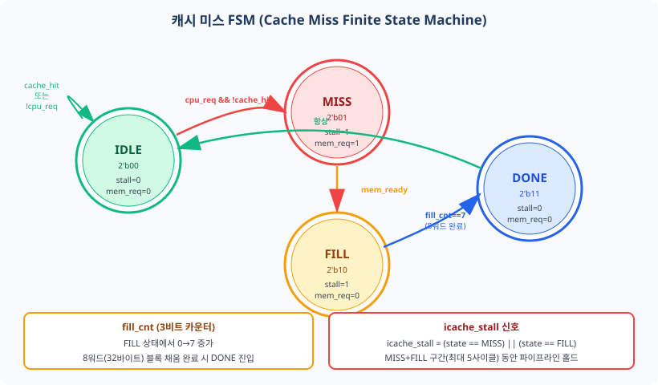
그림 13.9: 캐시 미스 FSM — IDLE→MISS→FILL→DONE→IDLE. MISS와 FILL 구간에서 icache_stall=1.
파이프라인 통합: 신호 우선순위
캐시 스톨 신호를 파이프라인에 연결할 때 가장 중요한 것은 우선순위입니다.
Ch11에서 flush > stall 우선순위를 확립했습니다. 여기에 캐시 스톨을 추가합니다.
// 신호 우선순위: flush(분기 플러시) > icache_stall > load_use_stall
// ch13_pipeline_with_icache.sv 래퍼에서 구현
// PC enable: flush 시 항상 업데이트, 캐시 미스 시 정지
assign pc_en = if_id_flush ? 1'b1 : // 분기 플러시 최우선
icache_stall ? 1'b0 : // 캐시 미스: PC 홀드
hdu_pc_en; // load-use 스톨
// IF/ID 레지스터 enable
assign if_id_en = icache_stall ? 1'b0 : hdu_if_id_en;
// id_ex_flush: 캐시 미스 시 0 유지 (홀드이므로 flush 불필요)
// flush 신호는 기존 Ch11 분기 플러시 로직에서 그대로 생성
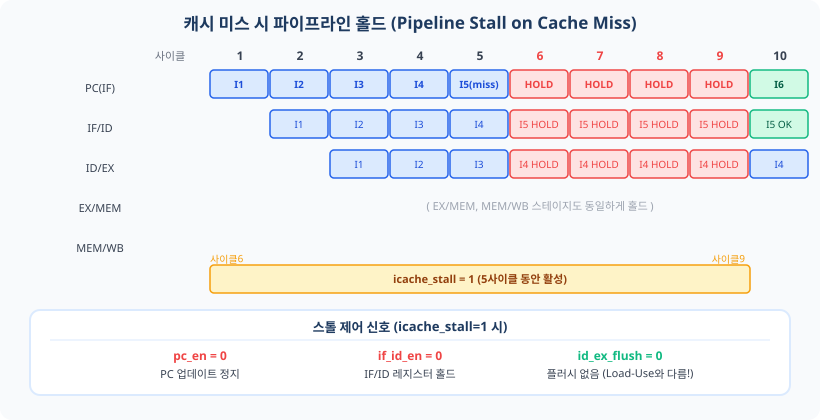
그림 13.10: 캐시 미스 시 파이프라인 홀드 타이밍 — 5사이클 동안 PC와 모든 파이프라인 레지스터가 동결된다.
13.5 시뮬레이션으로 확인하는 캐시 동작
이론을 수치로 확인할 시간입니다.
ch13_icache_tb.sv는 4가지 시나리오로 캐시 동작을 검증합니다.
각 시나리오는 다른 지역성 패턴을 나타냅니다.
시나리오 1: Cold Start (콜드 스타트, 히트율 0%)
캐시가 완전히 비어있는 상태에서 서로 다른 캐시 라인에 처음 접근합니다.
0x0000_0000 (Index=0), 0x0000_0020 (Index=1), 0x0000_0040 (Index=2).
세 주소 모두 valid=0이므로 Cold Miss(콜드 미스) 발생.
각 미스마다 5사이클 stall이 발생합니다.
Cold Miss는 불가피합니다. 처음 접근하는 데이터는 반드시 DRAM에서 가져와야 합니다.
시나리오 2: Sequential Access (순차 접근, 히트율 87.5%)
0x0000_0000에 처음 접근(MISS)하면 0x0000_0000~0x0000_001F의 32바이트 블록이 슬롯 #0에 채워집니다.
이후 같은 블록 내 0x0000_0004, 0x0000_0008, ..., 0x0000_001C(4바이트 간격, 7회)를 접근하면
모두 슬롯 #0에서 HIT됩니다. 8회 접근 중 1회 MISS + 7회 HIT = 히트율 87.5%.
이것이 공간적 지역성의 효과입니다.
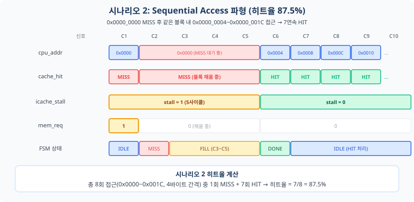
그림 13.11: 시나리오 2 파형 — 0x0000_0000 MISS(5사이클 stall) 후 0x0000_0004~0x0000_001C 모두 HIT(stall=0).
시나리오 3: Loop Access (루프 접근, 히트율 66.7%)
같은 주소 집합을 3회 반복 접근합니다 (버블정렬 루프를 모사).
3개 주소 × 3회 반복 = 9회 접근.
1회차(3회): 모두 Cold Miss.
2회차(3회): 모두 HIT. 3회차(3회): 모두 HIT.
총 히트율 = 6/9 = 66.7%. 이것이 시간적 지역성의 효과입니다.
시나리오 4: Conflict Miss (충돌 미스, 히트율 0%)
A=0x0000_0000 (Index=0, Tag=0x00000)과 B=0x0001_0000 (Index=0, Tag=0x00010)을 번갈아 접근합니다.
두 주소는 서로 다른 Tag를 가지지만 같은 Index=0에 매핑됩니다.
접근 ①: A → Cold Miss, 슬롯 #0에 A의 블록 채움.
접근 ②: B → Tag 불일치 → Conflict Miss, A의 블록 축출, B의 블록 채움.
접근 ③: A → Tag 불일치 → Conflict Miss, B의 블록 축출, A의 블록 채움.
접근 ④: B → Tag 불일치 → Conflict Miss... 캐시가 4KB임에도 불구하고 두 주소 때문에 히트율 0%!
이것이 직접 매핑의 근본적 한계입니다.
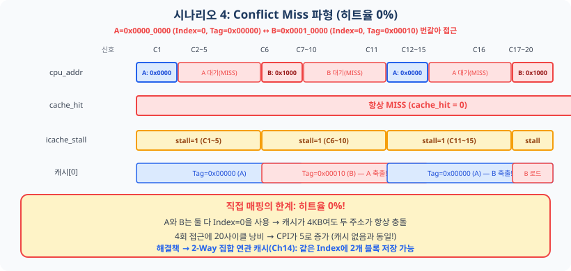
그림 13.12: 시나리오 4 파형 — A와 B가 슬롯 #0을 두고 계속 충돌. 4회 접근 모두 MISS, 20사이클 낭비.
히트율 자동 집계 코드
// ch13_icache_tb.sv: 히트율 자동 계산
integer total_access, total_hit;
always @(posedge clk) begin
if (cpu_req && !icache_stall) begin
total_access++;
if (cache_hit) total_hit++;
end
end
// 시뮬레이션 종료 시:
// $display("히트율: %0d%%", total_hit * 100 / total_access);
이 충돌 미스 체험이 바로 Ch14의 출발점입니다.
2-Way 집합 연관(2-Way Set-Associative) 캐시는 같은 Index에 2개의 라인을 저장할 수 있어,
시나리오 4에서 A와 B를 동시에 슬롯 0에 보관할 수 있게 됩니다.
직접 매핑의 한계를 체감했기 때문에, 집합 연관 방식의 필요성을 깊이 이해할 수 있습니다.
13.6 핵심 정리 및 Ch14 예고
핵심 개념 요약
개념
핵심 내용
메모리 계층 구조
빠르고 작은 캐시 + 느리고 큰 DRAM 조합. AMAT = 히트 시간 + 미스율 × 미스 페널티
시간적 지역성
최근 접근 주소 재접근 가능성 높음. 루프 카운터, 반복 실행 명령어가 대표 예시
공간적 지역성
인접 주소 접근 가능성 높음. 캐시 라인(32바이트) 단위 전송의 근거
직접 매핑
Tag/Index/Offset 분리. 각 주소 → 캐시 정확히 한 위치. 히트 판정: valid[idx] && tag 일치
icache_stall
미스 시 파이프라인 전체 홀드. pc_en=0, if_id_en=0, id_ex_flush=0. Load-Use와 다름
직접 매핑 한계
충돌 미스(Conflict Miss). 해결책: 2-Way 집합 연관(Ch14)
자가 점검 질문
캐시 히트율 95%, 미스 페널티 50사이클, 히트 시간 1사이클일 때 AMAT는?
풀이: AMAT = 1 + 0.05 × 50 = 3.5사이클
블록 크기를 64바이트로 늘리면 Tag/Index/Offset 비트 폭이 각각 어떻게 달라지는가?
(캐시 크기 4KB 유지)
풀이: Offset 6비트(log₂64), 엔트리 수=4096/64=64 → Index 6비트(log₂64), Tag=32-6-6=20비트(동일)
충돌 미스가 발생하는 두 주소 쌍을 스스로 만들어보라. (캐시 크기 4KB 기준)
풀이: 차이가 4KB(0x1000)의 배수인 주소 쌍. 예: 0x0000_0000과 0x0001_0000
icache_stall 신호가 flush와 동시에 발생하면 어떤 신호가 우선해야 하는가?
풀이: flush가 우선. wrong-path 명령어의 캐시 채움을 계속 진행하는 것은 낭비이기 때문
Ch14 예고 — 데이터 캐시와 Write 정책
이번 챕터에서는 명령어 캐시(L1 I-Cache)를 완성했습니다.
그런데 RISC-V 파이프라인은 LW/SW 명령어로 데이터 메모리(DMEM)에도 접근합니다.
STORE 명령어로 데이터를 쓸 때 캐시와 DRAM을 어떻게 동기화해야 할까요?
데이터 캐시에는 두 가지 Write 정책이 있습니다:
Write-Through(즉시 쓰기): 캐시와 DRAM 동시에 씀 → 항상 일치, 쓰기 버퍼 필요
Write-Back(나중에 쓰기): 캐시에만 쓰고 Dirty 비트 설정 → 성능 높음, 일관성 복잡
다음 챕터에서는 L1 D-Cache(데이터 캐시)와 Write-Through vs Write-Back 정책을 배우고,
I-Cache와 D-Cache를 모두 갖춘 완전한 캐시 시스템을 구현합니다.
연습 문제
[기억] 다음 용어를 각각 한 문장으로 정의하시오:
시간적 지역성(Temporal Locality), 직접 매핑(Direct-Mapped Cache), 캐시 미스 패널티(Cache Miss Penalty).
[기억] 메모리 계층 구조의 5단계를 속도가 빠른 순서대로 나열하시오.
각 단계의 대략적인 접근 시간(사이클 수)과 용량을 함께 기술하시오.
[이해/적용] 주소 0x0000_0040에 대해 다음을 구하시오:
(캐시 파라미터: 4KB, 128엔트리, 32바이트 블록)
(a) Tag, Index, Offset을 각각 구하시오.
(b) 주소 0x0001_0040이 0x0000_0040과 충돌하는지 판정하시오. Tag와 Index를 계산하여 근거를 제시하시오.
[이해/적용] 다음 8회 접근 시퀀스에서 히트/미스를 판정하고 히트율을 계산하시오:
(캐시는 초기 비어있음)
0x0000_0000, 0x0000_0004, 0x0000_0008, 0x0001_0000, 0x0000_0000, 0x0000_0004, 0x0001_0000, 0x0000_0008
[분석] icache_stall=1이 5사이클 동안 유지될 때 각 파이프라인 레지스터(IF/ID, ID/EX, EX/MEM, MEM/WB)의 상태를 분석하시오.
Load-Use 스톨 1사이클과 비교하여 id_ex_flush 처리 방식의 차이를 설명하고,
캐시 미스 페널티 5사이클이 CPI에 미치는 영향을 수식으로 나타내시오.
(LW 명령어 비율 25%, 미스율 10% 가정)
[평가] 다음 두 환경에서 최적의 캐시 구성(크기, 블록 크기, 직접 매핑 vs 2-Way)을 각각 제안하고, 그 근거를 기술하시오. (정답 없는 설계 문제)
환경 A: Basys 3 FPGA, BRAM 50개, 전력 제한, 교육용 소형 SOC
환경 B: 데이터센터 서버 CPU, 캐시 자원 풍부, 웹 서버 워크로드(무작위 메모리 접근 많음)
전체 소스 코드
지금 당장 전부 이해하지 않아도 됩니다.
각 절을 학습한 후 참조용으로 활용하십시오.
코드에 포함된 한국어 주석이 이해를 돕습니다.
모든 파일은 code_examples/ 디렉토리에 저장되어 있습니다.
ch13_icache_direct_mapped.sv — L1 직접 매핑 명령어 캐시 (완전 구현)
module icache_direct_mapped #(
parameter CACHE_SIZE = 4096, // 캐시 전체 크기 (바이트)
parameter BLOCK_SIZE = 32, // 블록 크기 (바이트) = 8워드
parameter NUM_ENTRIES = 128, // 캐시 엔트리 수
parameter ADDR_WIDTH = 32,
parameter TAG_WIDTH = 20, // 32 - 5 - 7 = 20비트
parameter INDEX_WIDTH = 7, // log2(128) = 7비트
parameter WORD_SEL = 3, // 블록 내 워드 선택: 3비트
parameter DATA_DEPTH = 1024, // data_mem 깊이 = 128 × 8워드
// 교재 단순화: MISS(1) + FILL(4) = 5사이클 미스 페널티
parameter FILL_CYCLES = 4 // FILL 상태 고정 사이클 수
)(
input logic clk, rst_n,
input logic flush, // 분기 플러시 시 FILL 중단
// 프로세서(IF 스테이지) 인터페이스
input logic [ADDR_WIDTH-1:0] cpu_addr,
input logic cpu_req,
output logic [31:0] cpu_rdata, // bram_rdata_reg (word_offset 정확)
output logic cache_hit,
output logic icache_stall,
// 하위 메모리 인터페이스
output logic [ADDR_WIDTH-1:0] mem_addr, // 블록 기저 주소
output logic mem_req,
input logic [31:0] mem_rdata,
input logic mem_ready
);
// 주소 필드 추출 (조합 논리)
wire [TAG_WIDTH-1:0] addr_tag = cpu_addr[31:12];
wire [INDEX_WIDTH-1:0] addr_index = cpu_addr[11:5];
wire [WORD_SEL-1:0] word_offset = cpu_addr[4:2];
// 캐시 배열
logic valid [0:NUM_ENTRIES-1]; // FF 배열 (동기 리셋)
(* ram_style = "distributed" *)
logic [TAG_WIDTH-1:0] tag_mem [0:NUM_ENTRIES-1]; // LUTRAM (비동기 읽기)
(* ram_style = "block" *)
logic [31:0] data_mem [0:DATA_DEPTH-1]; // BRAM (동기 읽기)
logic [31:0] bram_rdata_reg;
// 히트 판정 (LUTRAM 비동기 읽기 — 같은 사이클 즉시 결과)
assign cache_hit = valid[addr_index] && (tag_mem[addr_index] == addr_tag);
assign icache_stall = (state == MISS) || (state == FILL);
assign mem_req = (state == MISS);
assign mem_addr = {miss_addr_reg[31:5], 5'b00000}; // 블록 기저 주소
assign cpu_rdata = bram_rdata_reg; // 히트·DONE 모두 BRAM 결과 사용
// FSM 상태 — FILL은 고정 4사이클 카운터로 진행 (mem_ready 무관)
typedef enum logic [1:0] { IDLE=2'b00, MISS=2'b01, FILL=2'b10, DONE=2'b11 } cache_state_t;
cache_state_t state, next_state;
logic [1:0] fill_cnt; // 0~3 (FILL_CYCLES=4)
wire fill_done = (fill_cnt == FILL_CYCLES - 1);
logic [ADDR_WIDTH-1:0] miss_addr_reg;
logic [WORD_SEL-1:0] miss_word_offset; // CPU 요청 word_offset 래치
logic fill_flushed; // FILL 중 flush 발생 기록
// FSM 상태 레지스터
always_ff @(posedge clk) begin
if (!rst_n) begin
state <= IDLE; fill_cnt <= 2'b0; fill_flushed <= 1'b0;
for (int i = 0; i < NUM_ENTRIES; i++) valid[i] <= 1'b0;
end else begin
state <= next_state;
// miss 주소 및 요청 word_offset 래치 (DONE에서 정확한 워드 반환용)
if (state == IDLE && cpu_req && !cache_hit) begin
miss_addr_reg <= cpu_addr;
miss_word_offset <= word_offset;
end
// fill_cnt: IDLE/DONE에서 0 초기화, FILL 중 매 사이클 증가
if (state == IDLE || state == DONE) fill_cnt <= 2'b0;
else if (state == FILL && !flush && !fill_flushed) fill_cnt <= fill_cnt + 1'b1;
// fill_flushed: FILL/MISS 중 flush 감지, IDLE/DONE에서 클리어
if (state == IDLE || state == DONE) fill_flushed <= 1'b0;
else if ((state == MISS || state == FILL) && flush) fill_flushed <= 1'b1;
// valid/tag 갱신: flush 중단 시 억제 (invalid 유지)
if (state == FILL && fill_done && !flush && !fill_flushed) begin
valid[miss_addr_reg[11:5]] <= 1'b1;
tag_mem[miss_addr_reg[11:5]] <= miss_addr_reg[31:12];
end
end
end
// FSM 다음 상태
always_comb begin
next_state = state;
case (state)
IDLE: if (cpu_req && !cache_hit) next_state = MISS;
MISS: if (flush) next_state = IDLE;
else if (mem_ready) next_state = FILL;
FILL: if (flush) next_state = IDLE;
else if (fill_done) next_state = DONE;
DONE: next_state = IDLE;
default: next_state = IDLE;
endcase
end
// BRAM 동기 쓰기: FILL 완료 시 요청 워드 기록
wire [9:0] fill_word_addr = {miss_addr_reg[11:5], miss_word_offset};
always_ff @(posedge clk)
if (state == FILL && fill_done && !flush && !fill_flushed && mem_ready)
data_mem[fill_word_addr] <= mem_rdata;
// BRAM 동기 읽기: FILL 완료 직전에 요청 워드 읽기 트리거
// → DONE 사이클에 bram_rdata_reg에 올바른 word_offset 워드가 준비됨
wire [9:0] read_word_addr = {addr_index, word_offset};
wire [9:0] done_read_addr = {miss_addr_reg[11:5], miss_word_offset};
always_ff @(posedge clk)
if (state == FILL && fill_done)
bram_rdata_reg <= data_mem[done_read_addr]; // DONE용: 요청 word_offset
else
bram_rdata_reg <= data_mem[read_word_addr]; // 히트용: 현재 addr word_offset
endmodule
ch13_pipeline_with_icache.sv — 파이프라인 + I-Cache 통합 래퍼 (핵심 부분)